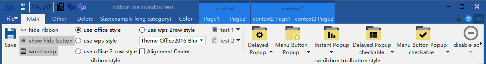
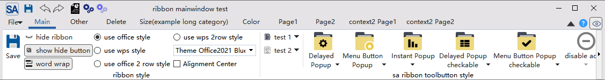
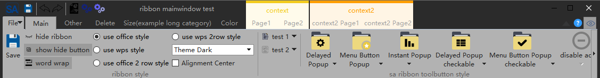
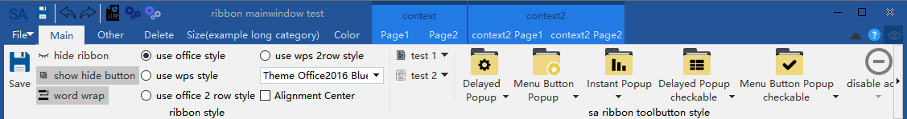
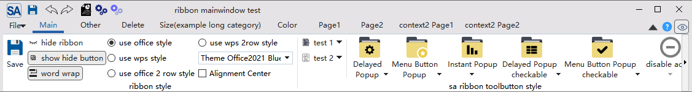
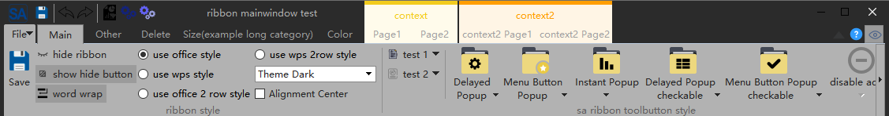
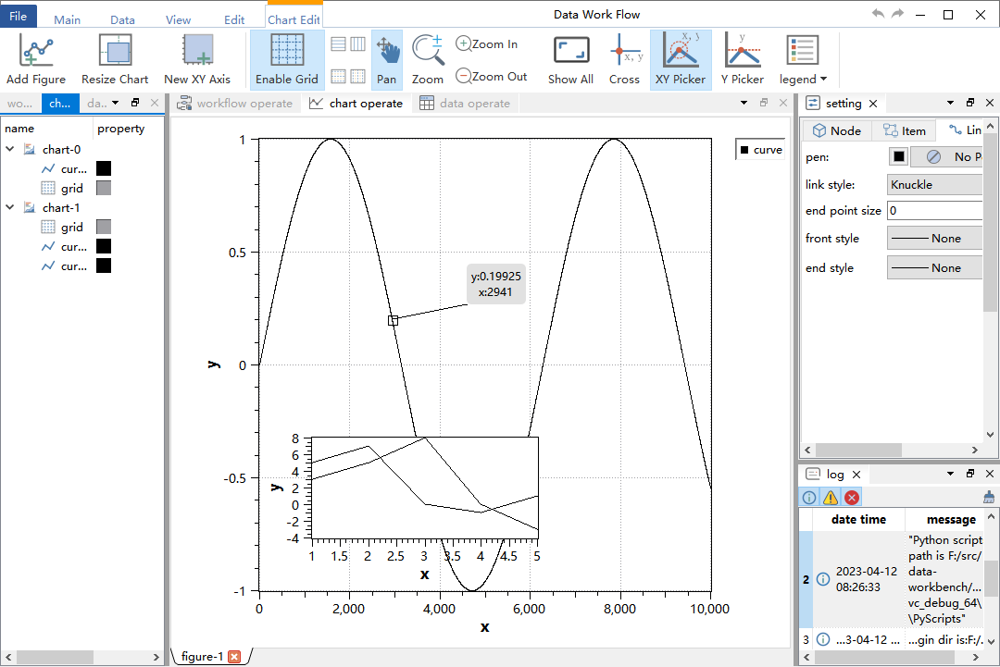

|
SARibbon 2.2.3
SARibbon wiki
|
|
SARibbon 2.2.3
SARibbon wiki
|
QQ交流群:434014314

| Windows(2019, latest) | Linux ubuntu(20.04, latest) | Mac(11-latest) | |
|---|---|---|---|
| Qt5.12 | |||
| Qt5.13 | |||
| Qt5.14 | |||
| Qt5.15 | |||
| Qt6.0 | |||
| Qt6.1 | |||
| Qt6.2 | |||
| Qt6.3 | |||
| Qt6.4 | |||
| Qt6.5 | |||
| Qt6.6 |
这是一个Qt下的Ribbon界面控件，提供了类似微软Office系列软件的操作界面。
SARibbon适用于大型软件、工业软件、复杂软件的uiSARibbon在设计时参考了MFC Ribbon接口的命名风格SARibbon的界面样式参考了微软Office系列软件以及WPS软件的Ribbon界面，并结合了两者的优点SARibbon是一个可定义多种主题风格的Ribbon控件，它能通过qss快速的定义出自己想要的主题风格为了方便大型软件的开发，SARibbon对常用的一些功能性控件进行了封装，例如：颜色选择按钮和颜色选择画板
win7主题：  office2013主题：
office2013主题：  office2016主题：  office2021主题：  dark主题： 
office2016主题：  office2021主题：  dark主题： 
MIT协议，欢迎大家使用并提出意见
gitee(码云) - https://gitee.com/czyt1988/SARibbon
github - https://github.com/czyt1988/SARibbon
SARibbon提供qmake和cmake两种构建方式，同时提供了一个集成的SARibbon.h和SARibbon.cpp文件方便静态的嵌入到单一工程
SARibbon支持第三方无边框库QWindowkit，同时也支持简单的无边框方案，如果你需要操作系统原生的窗口支持，如windows7以后的贴边处理，windows11的最大化按钮悬停的效果，建议开启QWindowkit库，QWindowkit库还能较好解决多屏幕移动问题
开启QWindowkit后的效果如下：

如果你要依赖QWindowkit库，需要先编译QWindowkit库，QWindowkit库作为SARibbon项目的submodules，如果在git clone时没有附带--recursive参数，需要执行submodule update命令:
用户指定使用QWindowkit后，要求C++标准最低为C++17否则最低要求为c++14
具体构建过程，见文档：SARibbon构建
SARibbon提供了合并好的SARibbon.h文件和SARibbon.cpp文件，只需要在自己的工程中引入这两个文件，同时把资源文件和第三方库文件引入就可以使用，无需编译为动态库或者静态库，可以参考StaticExample例子（位于src/example/StaticExample），静态嵌入将使用到SARibbon.h、SARibbon.cpp、SARibbon.pri、SARibbonBar/resource.qrc这4个文件，以及SARibbonBar/resource这个文件夹：
你的工程目录将如下所示：
使用qmake编译，有如下步骤：
SARibbon.h、SARibbon.cpp、SARibbon.pri拷贝到自己工程目录下SARibbonBar文件夹src/SARibbonBar/resource.qrc文件拷贝到自己工程目录下的SARibbonBar文件夹src/SARibbonBar下的resource文件夹和3rdparty文件夹拷贝到自己工程目录下的SARibbonBar文件夹中SARibbon.pri文件，如：include($$PWD/SARibbon.pri)使用cmake的话参考StaticExample（位于src/example/StaticExample）例子的cmake编写方式
在编译完成后，按照如下方法引入SARibbon
如果使用qmake，在编译完成后，你只需把如下文件按目录结构拷贝到你的工程中
先在你的工程中建立一个3rdparty文件夹，再把整个SARibbon文件夹拷贝过去，SARibbon内部已经有几个pri文件可以很方便的让你把工程引入到自己目录中，./importSARibbonBarLib.pri文件是用于引入SARibbon库的
在自己的Qt工程pro文件中加入如下语句即可
qmake的编译过程会在SARibbon下生成bin_qt{Qt version}_{MSVC/GNU}_x{32/64}文件夹，库文件和dll文件都在此文件夹下，importSARibbonBarLib.pri会自动把这个文件夹下的库引用进来
此时你的工程目录结构大致如下：
cmake在执行install后，会把必要的文件拷贝到安装目录下，cmake文件编写时可参考src/example/MainWindowExample/CMakeLists.txt
具体见文档：SARibbon构建
Ribbon是把菜单栏和工具栏合并了，并通过一个tab控件进行展示，Ribbon是无法简单的使用Tab+Toolbar替代的，涉及到很多细节问题，SARibbon在设计时参考了MFC Ribbon接口的命名风格，标签页称之为Category(种类)，每个Category下面有多个pannel（面板），面板下面管理着toolbutton，pannel有点类似传统的Toolbar，其层次结构如下图所示，这些命名参考了MFC的ribbon界面类

一些常见的名词解释如下
SARibbonCategorySARibbonContextCategorySARibbonPannelSARibbonApplicationButton,可以隐藏SARibbonQuickAccessBarSARibbonGallerySARibbonBar的层次如下图所示：
注：不同的布局方案影响着
Category和Quick Access Bar的摆放方式，具体可见SARibbonBar布局方案
要MainWindow中使用SARibbon，需要把QMainWindow替换为SARibbonMainWindow，SARibbonMainWindow修改了QMainWindow对menubar的渲染方式
注意，如果使用ui文件，要把原来ui文件的菜单删除，否则可能引起一些异常，如下图所示：

示例代码如下:
SARibbonMainWindow也支持普通模式的渲染，SARibbonMainWindow的构造函数第二个参数用于设定是否用ribbon模式：
第二个参数如果设置为false，将会使用普通的菜单工具栏模式，预留这个接口是为了一些项目需要能在ribbon和经典菜单工具栏切换的场景设计的，Ribbon状态和经典状态不支持热切换，如果需要切换，用户可以设置一个配置文件或者注册表，在应用重启时给第二个参数传入false即可进入到经典菜单工具栏模式
SARibbonBar支持在QWidget或者QDialog上使用，具体可见例子：src/example/WidgetWithRibbon
项目提供了SARibbonWidget类，widget窗口继承SARibbonWidget即可实现ribbon效果的窗口
SARibbonWidget类提供了setWidget方法，可以嵌入任意的widget
效果如下：
创建ribbon的顺序是：先创建类别(Category)，再创建面板(Pannel)，最后创建对应的toolbutton（action）
使用SARibbonBar::addCategoryPage把Category添加到SARibbonBar中，使用SARibbonCategory::addPannel把Pannel添加到Category中,使用SARibbonPannel::addAction可以在Pannel上添加action
下面的代码，演示了添加一个action的示例：
上面的操作添加了一个按钮，效果如下图所示：

用户也可以直接new出SARibbonCategory，并添加到pannel中，下面的代码效果和上面的一样：
Ribbon的图标有大有小，通过addLargeAction、addMediumAction、addSmallAction可以组合出不同的布局样式
具体可见./src/example/MainWindowExample/mainwindow.cpp
所谓上下文标签是指在特殊情况下才出现的标签/标签组，例如office word在选中图片时会出现图片编辑的上下文标签，如下图所示：
SARibbon中上下文标签对应的类为SARibbonContextCategory
上下文标签一般在程序初始化的时候就创建好，平时隐藏，等待需要显示的时候再显示，创建上下文标签如下：
由于上下文标签需要使用时唤起，因此，用一个成员变量保存起来是一个比较好的选择，当然也可以遍历查找（SARibbonBar::contextCategoryList可以例举所有的SARibbonContextCategory）
头文件：
cpp文件:
由SARibbonContextCategory创建的SARibbonCategory归SARibbonContextCategory管理，只有SARibbonContextCategory“显示了”,其管理的SARibbonCategory才显示，**注意：** SARibbonContextCategory并不是一个窗口，所以，它的“显示”打了引号
要显示一个上下文只需要调用SARibbonBar::showContextCategory/SARibbonBar::hideContextCategory即可:
注意： 如果要删除contextCategory需要调用SARibbonBar::destroyContextCategory，而不是直接delete，调用SARibbonBar::destroyContextCategory之后无需再对ContextCategory的指针delete
不同样式的contextCategory有不一样的风格，具体可见：SARibbon样式以及不同样式下的显示对比
ribbon界面左上角有个特殊且明显的按钮，称之为applicationButton，这个按钮一般用于调出菜单，SARibbonBar在构造时默认就创建了applicationButton，可以通过如下方式设置其文字：
默认的applicationButton继承自SARibbonApplicationButton,而SARibbonApplicationButton继承自QPushButton，因此你可以对其进行QPushButton所有的操作，当然如果想设置自己的Button作为applicationButton也是可以的，只需要调用SARibbonBar::setApplicationButton函数即可
QuickAccessBar是左上角的快速工具栏，rightButtonGroup是右上角的快速工具栏，在office模式下分左右两边，在wps模式下，左右将合起来，统一放到右边
SARibbon中：
SARibbonQuickAccessBar类SARibbonButtonGroupWidget类SARibbonBar在初始化时会默认创建QuickAccessBar和RightButtonGroup，通过SARibbonBar::quickAccessBar和SARibbonBar::rightButtonGroup即可获取其指针进行操作，示例如下：
SARibbon支持4种ribbon布局方案，布局方案参考了office的ribbon风格和WPS的ribbon风格，布局方案的切换可 通过void SARibbonBar::setRibbonStyle(RibbonStyle v)实现
office模式是最常见的ribbon模式，tab和标题栏占用位置较多，WPS设计的ribbon模式进行了改良，它为了减小ribbon的高度，把标签和标题栏设置在一起，这样减少了一个标题栏高度，有效利用了垂直空间，同时还把pannel的按钮布局由最大摆放3个变为摆放两个，进一步压缩了垂直空间
office的word界面和WPS Word界面截图对比
在正常屏幕下，WPS 样式会比 Office 样式减少至少30像素左右的垂直高度，相比1920*1080的屏幕来说，相当于节约了接近3的垂直空间
SARibbon中把带有标题栏的称之为宽松布局（Loose），宽松布局的各个元素如下图排列：
这个布局和office的默认布局是一致的
SARibbon中把带有标题栏和tab结合一起的布局方式称之为紧凑布局（Compact），紧凑布局的各个元素如下图排列：
SARibbonBar提供了setRibbonStyle函数，可以定义当前的布局方案，枚举SARibbonBar::RibbonStyle定义了四种布局方案：
SARibbonBar::RibbonStyleLooseThreeRow宽松结构，3行模式(v0.x版本为SARibbonBar::OfficeStyle)SARibbonBar::RibbonStyleLooseTwoRow宽松结构，2行模式(v0.x版本为SARibbonBar::OfficeStyleTwoRow)
SARibbonBar::RibbonStyleCompactThreeRow紧凑结构，3行模式(v0.x版本为SARibbonBar::WpsLiteStyle)
SARibbonBar::RibbonStyleCompactTwoRow紧凑结构，2行模式(v0.x版本为SARibbonBar::WpsLiteStyleTwoRow)
通过SARibbonBar::setEnableWordWrap函数可以控制SARibbonBar的文字是否换行，SARibbonBar的高度是固定的，文字是否换行会影响图标显示的大小，因此，如果你想图标看起来更大，可以设置文字不换行
在SARibbonBar::RibbonStyleCompactTwoRow的布局模式下，文字不换行的显示效果如下：
SARibbonBar文字设置为不换行后，会使图标的显示空间变得更大
SARibbonPannel提供了三个添加action的方法：
addLargeActionaddMediumActionaddSmallAction在标准的pannel中，一个action（按钮）有3种布局，以office word为例，pannel的三种布局其实是所占行数:
largemediumsamll枚举SARibbonPannelItem::RowProportion是为了表征每个窗体在pannel所占行数的情况，在pannel布局中会常用到，这个枚举定义如下：
SARibbonPannel里管理的每个action都会带有一个私有的属性（SARibbonPannelItem::RowProportion），这个属性决定了这个action在pannel里的布局
三行模式是传统的pannel布局方式，如下图所示：

3行模式下有三种占位(SARibbonPannelItem::RowProportion)，分别为large、medium和small
3行模式下的pannel会显示pannel的标题在Pannel Title区域，另外还有一个OptionAction的区域，这个是给这个action添加特殊触发使用的，如果没有设置OptionAction，这个区域是隐藏。
2行模式是WPS的改进布局法（具体是否是WPS首先这样做的不清楚，我是按照WPS的布局进行参考的），如下图所示：

2行模式下medium和small占位(SARibbonPannelItem::RowProportion)是一样的，不做区分。
2行模式下pannel是不显示标题的
ribbon的自定义是ribbon的一个特色，参考了office和wps的自定义界面，用户可以为自己的ribbon定义非常多的内容，甚至可以定义出一个完全和原来不一样的界面。
以下是office的自定义界面
SARibbon参考office和wps的界面，封装了方便使用的SARibbonCustomize**类，包括如下5个类：
实际用户使用仅会面对SARibbonActionsManager和SARibbonCustomizeDialog/SARibbonCustomizeWidget，其余类用户正常不会使用。
SARibbonActionsManager是用来管理QAction，把想要自定义的QAction添加到SARibbonActionsManager中管理，并可以对QAction进行分类，以便在SARibbonCustomizeDialog/SARibbonCustomizeWidget中显示
SARibbonCustomizeDialog/SARibbonCustomizeWidget是具体的显示窗口，SARibbonCustomizeDialog把SARibbonCustomizeWidget封装为对话框，如果要实现office那样集成到配置对话框中可以使用SARibbonCustomizeWidget，SARibbonCustomizeDialog的效果如下图所示：

这里演示如何添加自定义功能
首先定义SARibbonActionsManager作为MainWindow的成员变量
在MainWindow的初始化过程中，还需要创建大量的QAction，QAction的父对象指定为MainWindow，另外还会生成ribbon布局，例如添加category，添加pannel等操作，在上述操作完成后添加如下步骤，自动让SARibbonActionsManager管理所有的QAction
SARibbonActionsManager的关键函数autoRegisteActions可以遍历 SARibbonMainWindow下的所有子object，找到action并注册，并会遍历所有SARibbonCategory,把SARibbonCategory下的action按SARibbonCategory的title name进行分类，此函数还会把SARibbonMainWindow下面的action，但不在任何一个category下的作为NotInRibbonCategoryTag标签注册，默认名字会赋予not in ribbon
在需要调用SARibbonCustomizeDialog的地方如下操作：
在MainWindow生成前还需要把自定义的内容加载，因此在构造函数最后应该加入如下语句：
sa_apply_customize_from_xml_file是SARibbonCustomizeWidget.h中提供的函数，直接把配置文件中的自定义内容应用到MainWindow中。
这样软件每次启动都会按照配置文件加载。


github - https://github.com/czyt1988/data-workbench
gitee - https://gitee.com/czyt1988/data-workbench
具体Ribbon的生成代码可见：
https://github.com/czyt1988/data-workbench/blob/master/src/APP/DAAppRibbonArea.cpp
你可以通过doxygen生成qch和html类型的文档，doc/Doxyfile-qch-cn文件用于生成<tt>.qch格式的qt帮助文档,你可以把它集成到qt creator当中，doc/Doxyfile-wiki-cn文件用于生成html格式的文档，方便你在浏览器中查阅
针对高分屏显示，有如下两个方面准备
1 - 在main函数中为QApplication设置Qt::AA_EnableHighDpiScaling属性
这个属性使得应用程序自动检测显示器的像素密度来实现自动缩放，示例代码如下：
2 - 在main函数中为QApplication设置缩放策略：QApplication::setHighDpiScaleFactorRoundingPolicy
Qt5.6提供了Qt::AA_EnableHighDpiScaling，但不能完全解决，Qt5.14开始提供了高分屏缩放策略设置QApplication::setHighDpiScaleFactorRoundingPolicy，同AA_EnableHighDpiScaling一样需要在main函数前面设置
经常有人反馈使用SARibbonBar后，没有被激活的tab页的快捷键没有响应，只有激活的标签页的快捷键才有反应，如果是传统的toolbar模式，由于action所在的toolbar一直在最前端，因此快捷键一直生效，但如果是SARibbonBar，action所在的pannel是会隐藏的，隐藏后快捷键就不生效，如果想快捷键无论Pannel是否隐藏都生效，设置快捷键的shortcutContext属性为Qt::ApplicationShortcut也无效，这时，可以在创建Category的地方手动创建快捷键
例如：
这个快捷键的创建位置在Mainwidnow，这样快捷键就随着mainwindow周期